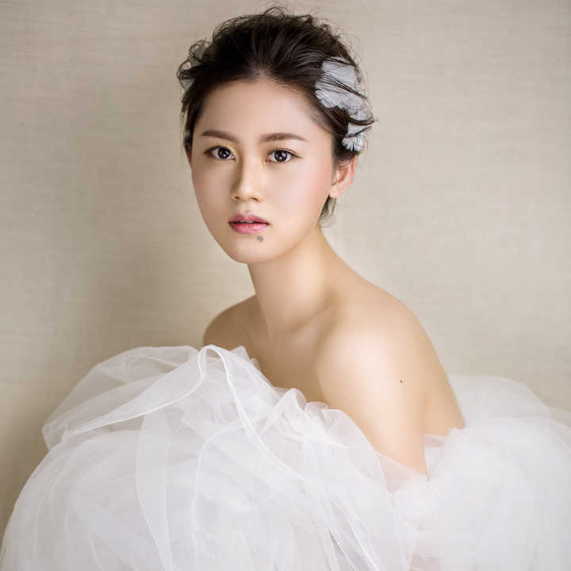
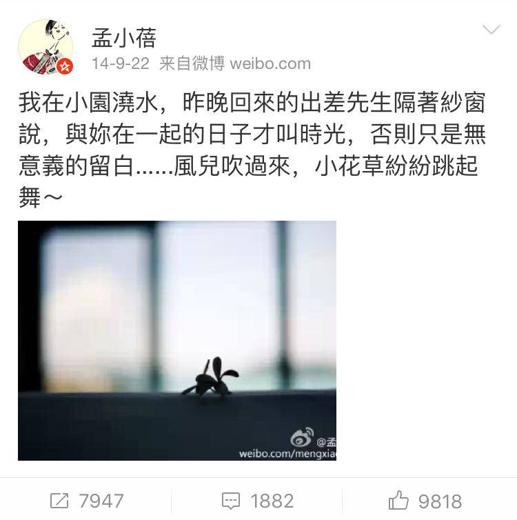
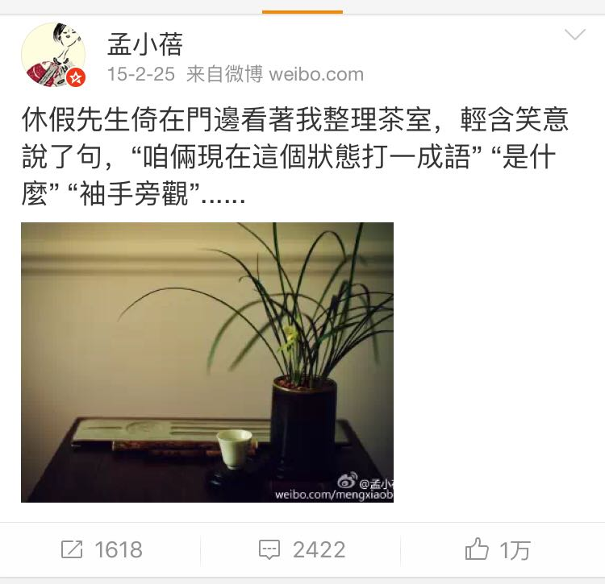

名字:
Jenny Wang
性别:女

介绍:人生最重要的就是开森！
问题
答案
新建于:2016-01-14 11:53:44 PM，更新于2016-08-06 07:50:16 PM
Pre上一页
Next下一页
跳页:
正文: 去年看《我是歌手》特别喜欢清华哥哥李健，后来看了李健夫人的微博：
上面记录着他们的幸福点滴，我就更想找个清华哥哥当老公。那以后有人问我想找什么样的男朋友或者想嫁给什么样的人，我就说“李健那样的清华哥哥”。
后来我真找到我的清华哥哥了，现已见完家长，等我毕业回国，今年9月就嫁。
Pre上一页
Next下一页
跳页: